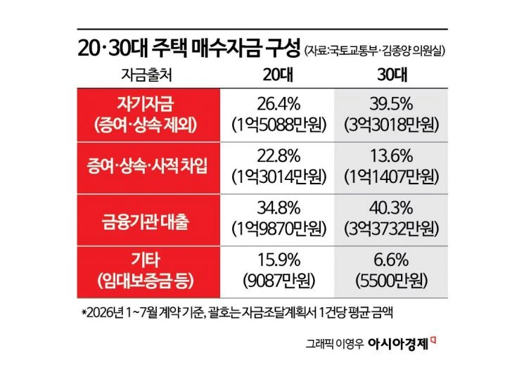

가장 큰 자금줄은 은행 대출
20대 주택 매수자금에서 금융기관 대출이 차지한 비중은 34.8%로 가장 높았다.
차창 밖 아파트 단지
아파트를 바라보는 20대 여성의 가상 독백.
차창 밖에서 계약서 앞으로
28일 국회 국토교통위원회 소속 김종양 국민의힘 의원실이 국토교통부에서 받은 자료를 분석한 결과, 올해 1~7월 자금조달계획서 제출 대상 지역에서 20대가 산 주택의 평균 매매가는 5억7000만원이었다.
2026년 1~7월 계약 기준 · 자료: 국토교통부·김종양 의원실
5억7000만원 가운데
예금과 현금, 주식 매각대금과 부동산 처분대금 등을 합한 자체 자금은 평균 매수자금의 26.4%였다.
나머지 돈은 어디에서 왔을까.
돈의 출처를 따라가면
20대의 자금조달계획서 1건당 평균 매수자금을 출처별로 나눠봤다.
비율은 반올림으로 합계가 100%와 다를 수 있다. 자료: 국토교통부·김종양 의원실
20대 주택 매수자금에서 금융기관 대출이 차지한 비중은 34.8%로 가장 높았다.
가족·친지 등에게 빌린 ‘그 밖의 차입금’은 매수자금의 11.5%, 증여·상속은 11.3%였다. 둘을 합친 가족 자금은 22.8%를 차지했다.
자기자금과 금융기관 대출, 가족 자금, 임대보증금 등 기타 자금이 한 집의 매수자금을 이뤘다.

부모가 ‘대출 창구’가 된 20대
20대가 제출한 자금조달계획서 가운데 ‘그 밖의 차입금’을 적은 비율은 2021년 23.9%에서 올해 44.0%로 올랐다. 의원실이 확보한 2021~2026년 자료 중 가장 높다.
‘그 밖의 차입금’은 시중은행 대출이 아닌 가족·친지 등에게 빌린 사적 채무를 뜻한다.
5053건 중 2224건. 올해 20대가 제출한 계획서에 사적 차입이 기재된 건수다.
빌린 돈과 받은 돈
5053건 중 2224건의 계획서에 사적 차입이 기재됐다.
5053건 중 2445건의 계획서에 증여·상속이 기재됐다.
두 수치는 각 항목을 적은 계획서의 비율이다. 한 계획서에 두 항목이 함께 기재될 수 있어 합산하지 않는다. 앞 장면의 22.8%는 매수자금의 금액 비중이다.
자료: 국토교통부·김종양 의원실
다른 세대의 자금줄
20대와 30대의 최대 자금원은 금융기관 대출이다. 40대부터는 기존 부동산을 처분한 돈이 가장 큰 몫을 차지했다.
각 연령대에서 비중이 가장 큰 자금 항목. 막대는 0~60%의 동일한 눈금을 사용했다. 자료: 국토교통부·김종양 의원실
가족에게서 받거나 빌린 돈이 매수자금에서 차지한 비중은 20대 22.8%, 30대 13.6%. 20대에게 가족 자금의 몫이 더 컸다.
증여와 가족 간 차용으로 자금을 조달할 수 있는 20대가 주택시장에 진입하는 양상이다.
20대의 집값과 자금 비중은 자금조달계획서 제출 대상 지역의 거래를 분석한 평균이다. 모든 20대 주택 거래를 뜻하지 않는다.